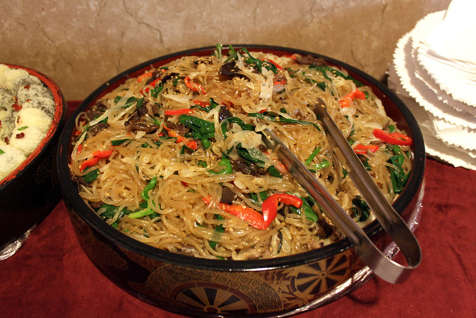

Japchae is a dish that is very well known inside and outside of Korea. It is really difficult to not be seen on the menu.
Japchae is loved by many for both its savory and sweet flavors. It is sometimes offered as a side dish, but is usually served as a main dish with its own or served on a bowl of rice.
Japchae has always been considered a royal dish, meaning that it was a common dish for the royal family during the Joseon dynasty. This dish has continued to be served at special occasions, such as birthdays and holidays, leading it to become a really popular dish because it can be easily modified and easily prepared on a large scale.
The most basic version of Japchae, with a soy sauce based marinade, consists of a combination of the following: glass noodles, carrots, spinach, beef strips, green onion, bell peppers, onions, and mushrooms.
The soy sauce flavors (with added sugar and sesame oil) makes this dish salty, sweet, and savory. These mild flavors, along with the fact that the ingredients can easily be substituted, help make it an approachable dish even for foreigners.
Ingredients for Japchae
- Glass noodles (sweet potato vermicelli)
- Vegetables of choice - carrots, spinach, bell peppers, mushroom, onion
- Beef or pork
- Garlic
- Soy sauce
- Sugar
- Sesame Oil
- Sesame seeds

Photo: Japchae by Veronica at Flickr CC BY-NC 2.0
Basic Recipe for Japchae
- Boil water and cook glass noodles until noodles are chewable
- Julienne all vegetables and mince garlic
- Cut beef/pork into strips or buy stir-fry beef/pork
- Stir-fry all vegetables and meat separately in oil (vegetable or sesame) - place each stir-fried ingredients on different plates
- Either on big bowl or pan, add all ingredients above
- Add in soy sauce, minced garlic, sugar, sesame oil
- Mix together all ingredients and add in sesame seeds
- Serve immediately
- Tips and Notes
- - Ingredients are easily substituted (can accomodate for many food preferences, sensitivities, and allergies)
- - It is common to add egg, but can make the process a lot more tedious
- - Many of these ingredients can be found at local grocery store
- - You can adjust soy sauce and sugar levels based on preferred taste